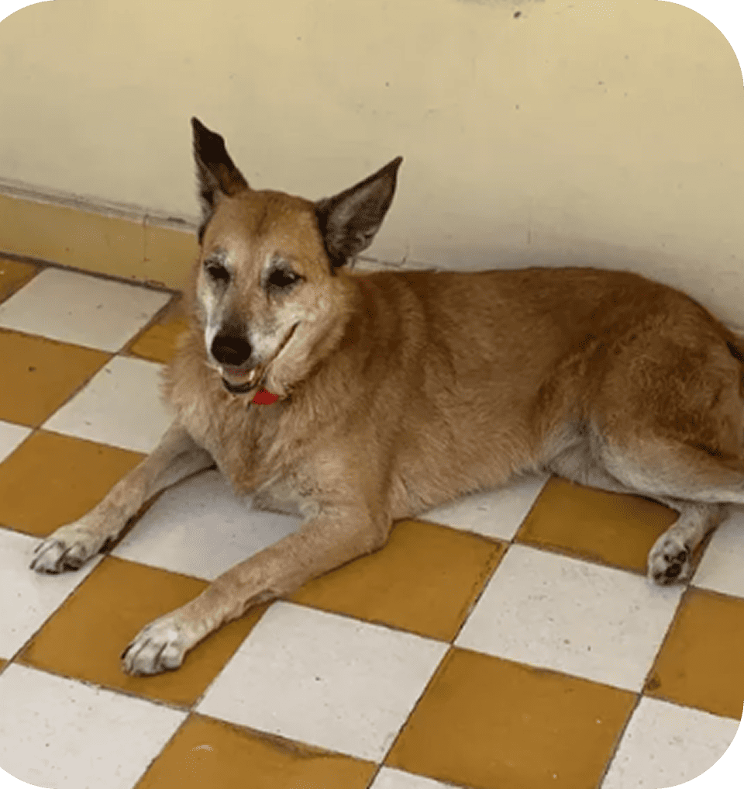
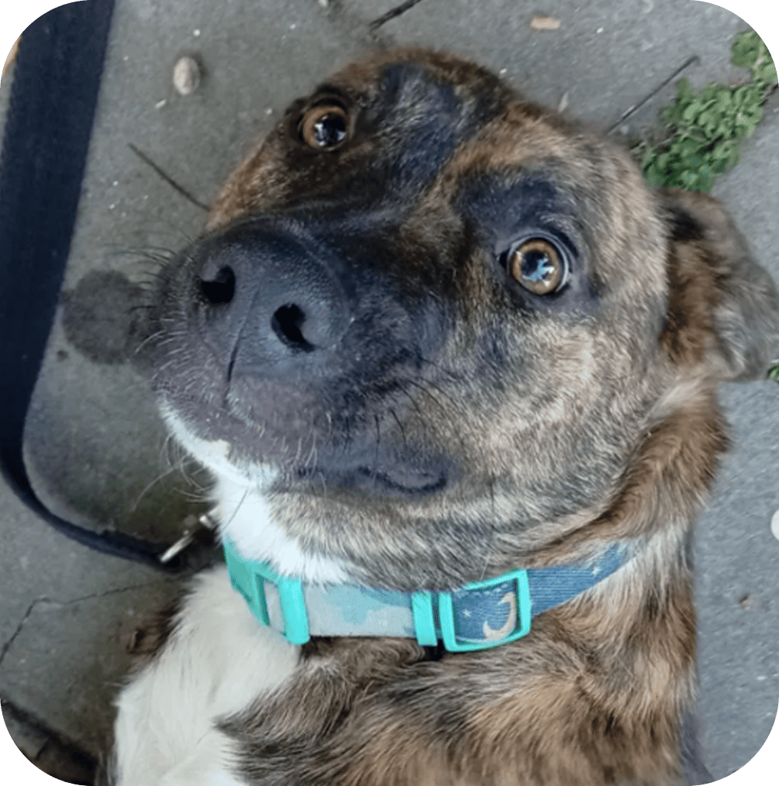
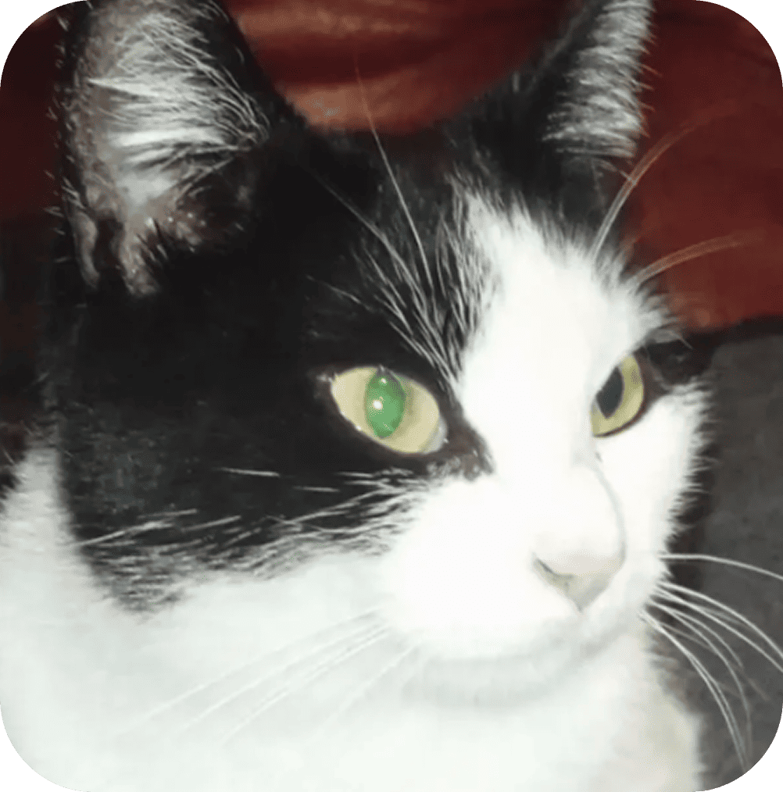

Toby encontró su hogar
Rescatado en situación de abandono con desnutrición severa. Tras tres meses de tratamiento veterinario, alimento medicado y cuidados en tránsito, hoy disfruta de una familia responsable en Gonnet.
Cuando adoptás, le das una segunda oportunidad a un animal lleno de amor. En Callejeritos Gonnet, cada perrito se recupera en un hogar de tránsito hasta estar listo para conocer a su familia definitiva.
Adoptar es salvar una vida y liberar un lugar en nuestra red para poder sacar a otro perrito de la calle. Es un acto de amor, responsabilidad y compromiso que cambia su historia para siempre.

Rescatado en situación de abandono con desnutrición severa. Tras tres meses de tratamiento veterinario, alimento medicado y cuidados en tránsito, hoy disfruta de una familia responsable en Gonnet.

Ingresó tras sufrir un accidente en la vía pública. Con lo recaudado mediante donaciones solidarias y Gallejeritas veganas pudimos cubrir su cirugía y rehabilitación completa hasta su adopción definitiva.

Fue encontrado junto a sus hermanos sin refugio. Gracias a los hogares de tránsito temporales recibió todas sus vacunas y desparasitaciones, y hoy crece sano acompañado de mucho amor.
Cada colaboración cuenta para darles un nuevo
comienzo a los callejeritos que más lo necesitan.
Tu ayuda es fundamental para que sigamos
dándoles segundas oportunidades. Juntos, podemos demostrar
que el amor lo cambia todo.